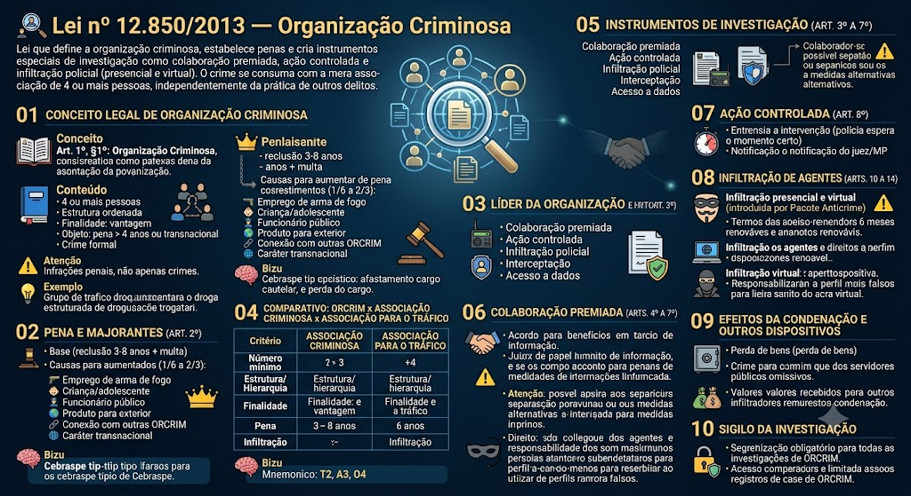

Organizações Criminosas — Lei 12.850/2013
BR / 2026-10-13 / compilada (texto vigente)
Consultar fonte oficial Baixar cópia local
A redação desta cópia corresponde à versão identificada acima. Consulte a fonte oficial para conferir alterações posteriores e o recorte do seu edital.
Roteiro de leitura
- Definições e delitos
- Colaboração premiada
- Ação controlada e infiltração
- Meios de obtenção da prova
Índice dos 37 dispositivos
Lei nº 12.850 de 02/08/2013
LEI Nº 12.850, DE 2 DE AGOSTO DE 2013
Define organização criminosa e dispõe sobre a investigação criminal, os meios de obtenção da prova, infrações penais correlatas e o procedimento criminal; altera o Decreto-Lei nº 2.848, de 7 de dezembro de 1940 (Código Penal); revoga a Lei nº 9.034, de 3 de maio de 1995; e dá outras providências.
A PRESIDENTA DA REPÚBLICA
Faço saber que o Congresso Nacional decreta e eu sanciono a seguinte Lei:
CAPÍTULO I — DA ORGANIZAÇÃO CRIMINOSA
Art. 1º Esta Lei define organização criminosa e dispõe sobre a investigação criminal, os meios de obtenção da prova, infrações penais correlatas e o procedimento criminal a ser aplicado.
§ 1º Considera-se organização criminosa a associação de 4 (quatro) ou mais pessoas estruturalmente ordenada e caracterizada pela divisão de tarefas, ainda que informalmente, com objetivo de obter, direta ou indiretamente, vantagem de qualquer natureza, mediante a prática de infrações penais cujas penas máximas sejam superiores a 4 (quatro) anos, ou que sejam de caráter transnacional.
§ 2º Esta Lei se aplica também:
I - às infrações penais previstas em tratado ou convenção internacional quando, iniciada a execução no País, o resultado tenha ou devesse ter ocorrido no estrangeiro, ou reciprocamente;
II - às organizações terroristas, entendidas como aquelas voltadas para a prática dos atos de terrorismo legalmente definidos. *(Inciso com redação dada pela Lei nº 13.260, de 16/3/2016)*
Art. 2º Promover, constituir, financiar ou integrar, pessoalmente ou por interposta pessoa, organização criminosa:
Pena - reclusão, de 3 (três) a 8 (oito) anos, e multa, sem prejuízo das penas correspondentes às demais infrações penais praticadas.
§ 1º Nas mesmas penas incorre quem impede ou, de qualquer forma, embaraça a investigação de infração penal que envolva organização criminosa, se o fato não constituir crime mais grave. *(Parágrafo com redação dada pela Lei nº 15.245, de 29/10/2025)*
§ 2º As penas aumentam-se até a metade se na atuação da organização criminosa houver emprego de arma de fogo.
§ 3º A pena é agravada para quem exerce o comando, individual ou coletivo, da organização criminosa, ainda que não pratique pessoalmente atos de execução.
§ 4º A pena é aumentada de 1/6 (um sexto) a 2/3 (dois terços):
I - se há participação de criança ou adolescente ou se a organização criminosa é destinada ao cometimento dos crimes previstos na Lei nº 8.069, de 13 de julho de 1990 (Estatuto da Criança e do Adolescente); *(Inciso com redação dada pela Lei nº 15.487, de 6/8/2026)*
II - se há concurso de funcionário público, valendo-se a organização criminosa dessa condição para a prática de infração penal;
III - se o produto ou proveito da infração penal destinar-se, no todo ou em parte, ao exterior;
IV - se a organização criminosa mantém conexão com outras organizações criminosas independentes;
V - se as circunstâncias do fato evidenciarem a transnacionalidade da organização.
§ 5º Se houver indícios suficientes de que o funcionário público integra organização criminosa, poderá o juiz determinar seu afastamento cautelar do cargo, emprego ou função, sem prejuízo da remuneração, quando a medida se fizer necessária à investigação ou instrução processual.
§ 6º A condenação com trânsito em julgado acarretará ao funcionário público a perda do cargo, função, emprego ou mandato eletivo e a interdição para o exercício de função ou cargo público pelo prazo de 8 (oito) anos subsequentes ao cumprimento da pena.
§ 7º Se houver indícios de participação de policial nos crimes de que trata esta Lei, a Corregedoria de Polícia instaurará inquérito policial e comunicará ao Ministério Público, que designará membro para acompanhar o feito até a sua conclusão.
§ 8º As lideranças de organizações criminosas armadas ou que tenham armas à disposição deverão iniciar o cumprimento da pena em estabelecimentos penais de segurança máxima. *(Parágrafo acrescido pela Lei nº 13.964, de 24/12/2019, publicada na Edição Extra do DOU de 24/12/2019, em vigor 30 dias após a publicação)*
§ 9º O condenado expressamente em sentença por integrar organização criminosa ou por crime praticado por meio de organização criminosa não poderá progredir de regime de cumprimento de pena ou obter livramento condicional ou outros benefícios prisionais se houver elementos probatórios que indiquem a manutenção do vínculo associativo. *(Parágrafo acrescido pela Lei nº 13.964, de 24/12/2019, publicada na Edição Extra do DOU de 24/12/2019, em vigor 30 dias após a publicação)*
CAPÍTULO II — DA INVESTIGAÇÃO E DOS MEIOS DE OBTENÇÃO DA PROVA
Art. 3º Em qualquer fase da persecução penal, serão permitidos, sem prejuízo de outros já previstos em lei, os seguintes meios de obtenção da prova:
I - colaboração premiada;
II - captação ambiental de sinais eletromagnéticos, ópticos ou acústicos;
III - ação controlada;
IV - acesso a registros de ligações telefônicas e telemáticas, a dados cadastrais constantes de bancos de dados públicos ou privados e a informações eleitorais ou comerciais;
V - interceptação de comunicações telefônicas e telemáticas, nos termos da legislação específica;
VI - afastamento dos sigilos financeiro, bancário e fiscal, nos termos da legislação específica;
VII - infiltração, por policiais, em atividade de investigação, na forma do art. 11;
VIII - cooperação entre instituições e órgãos federais, distritais, estaduais e municipais na busca de provas e informações de interesse da investigação ou da instrução criminal.
§ 1º Havendo necessidade justificada de manter sigilo sobre a capacidade investigatória, poderá ser dispensada licitação para contratação de serviços técnicos especializados, aquisição ou locação de equipamentos destinados à polícia judiciária para o rastreamento e obtenção de provas previstas nos incisos II e V. *(Parágrafo acrescido pela Lei nº 13.097, de 19/1/2015)*
§ 2º No caso do § 1º, fica dispensada a publicação de que trata o parágrafo único do art. 61 da Lei nº 8.666, de 21 de junho de 1993, devendo ser comunicado o órgão de controle interno da realização da contratação. *(Parágrafo acrescido pela Lei nº 13.097, de 19/1/2015)*
Seção I — Da Colaboração Premiada
Art. 3º-A. O acordo de colaboração premiada é negócio jurídico processual e meio de obtenção de prova, que pressupõe utilidade e interesse públicos. *(Artigo acrescido pela Lei nº 13.964, de 24/12/2019, publicada na Edição Extra do DOU de 24/12/2019, em vigor 30 dias após a publicação)*
Art. 3º-B. O recebimento da proposta para formalização de acordo de colaboração demarca o início das negociações e constitui também marco de confidencialidade, configurando violação de sigilo e quebra da confiança e da boa-fé a divulgação de tais tratativas iniciais ou de documento que as formalize, até o levantamento de sigilo por decisão judicial.
§ 1º A proposta de acordo de colaboração premiada poderá ser sumariamente indeferida, com a devida justificativa, cientificando-se o interessado.
§ 2º Caso não haja indeferimento sumário, as partes deverão firmar Termo de Confidencialidade para prosseguimento das tratativas, o que vinculará os órgãos envolvidos na negociação e impedirá o indeferimento posterior sem justa causa.
§ 3º O recebimento de proposta de colaboração para análise ou o Termo de Confidencialidade não implica, por si só, a suspensão da investigação, ressalvado acordo em contrário quanto à propositura de medidas processuais penais cautelares e assecuratórias, bem como medidas processuais cíveis admitidas pela legislação processual civil em vigor.
§ 4º O acordo de colaboração premiada poderá ser precedido de instrução, quando houver necessidade de identificação ou complementação de seu objeto, dos fatos narrados, sua definição jurídica, relevância, utilidade e interesse público.
§ 5º Os termos de recebimento de proposta de colaboração e de confidencialidade serão elaborados pelo celebrante e assinados por ele, pelo colaborador e pelo advogado ou defensor público com poderes específicos.
§ 6º Na hipótese de não ser celebrado o acordo por iniciativa do celebrante, esse não poderá se valer de nenhuma das informações ou provas apresentadas pelo colaborador, de boa-fé, para qualquer outra finalidade. *(Artigo acrescido pela Lei nº 13.964, de 24/12/2019, publicada na Edição Extra do DOU de 24/12/2019, em vigor 30 dias após a publicação)*
Art. 3º-C. A proposta de colaboração premiada deve estar instruída com procuração do interessado com poderes específicos para iniciar o procedimento de colaboração e suas tratativas, ou firmada pessoalmente pela parte que pretende a colaboração e seu advogado ou defensor público.
§ 1º Nenhuma tratativa sobre colaboração premiada deve ser realizada sem a presença de advogado constituído ou defensor público.
§ 2º Em caso de eventual conflito de interesses, ou de colaborador hipossuficiente, o celebrante deverá solicitar a presença de outro advogado ou a participação de defensor público.
§ 3º No acordo de colaboração premiada, o colaborador deve narrar todos os fatos ilícitos para os quais concorreu e que tenham relação direta com os fatos investigados.
§ 4º Incumbe à defesa instruir a proposta de colaboração e os anexos com os fatos adequadamente descritos, com todas as suas circunstâncias, indicando as provas e os elementos de corroboração. *(Artigo acrescido pela Lei nº 13.964, de 24/12/2019, publicada na Edição Extra do DOU de 24/12/2019, em vigor 30 dias após a publicação)*
Art. 4º O juiz poderá, a requerimento das partes, conceder o perdão judicial, reduzir em até 2/3 (dois terços) a pena privativa de liberdade ou substituí-la por restritiva de direitos daquele que tenha colaborado efetiva e voluntariamente com a investigação e com o processo criminal, desde que dessa colaboração advenha um ou mais dos seguintes resultados:
I - a identificação dos demais coautores e partícipes da organização criminosa e das infrações penais por eles praticadas;
II - a revelação da estrutura hierárquica e da divisão de tarefas da organização criminosa;
III - a prevenção de infrações penais decorrentes das atividades da organização criminosa;
IV - a recuperação total ou parcial do produto ou do proveito das infrações penais praticadas pela organização criminosa; *(Vide ADPF nº 569/2019)*
V - a localização de eventual vítima com a sua integridade física preservada.
§ 1º Em qualquer caso, a concessão do benefício levará em conta a personalidade do colaborador, a natureza, as circunstâncias, a gravidade e a repercussão social do fato criminoso e a eficácia da colaboração.
§ 2º Considerando a relevância da colaboração prestada, o Ministério Público, a qualquer tempo, e o delegado de polícia, nos autos do inquérito policial, com a manifestação do Ministério Público, poderão requerer ou representar ao juiz pela concessão de perdão judicial ao colaborador, ainda que esse benefício não tenha sido previsto na proposta inicial, aplicando-se, no que couber, o art. 28 do Decreto-Lei nº 3.689, de 3 de outubro de 1941 (Código de Processo Penal).
§ 3º O prazo para oferecimento de denúncia ou o processo, relativos ao colaborador, poderá ser suspenso por até 6 (seis) meses, prorrogáveis por igual período, até que sejam cumpridas as medidas de colaboração, suspendendo-se o respectivo prazo prescricional.
§ 4º Nas mesmas hipóteses do *caput* deste artigo, o Ministério Público poderá deixar de oferecer denúncia se a proposta de acordo de colaboração referir-se a infração de cuja existência não tenha prévio conhecimento e o colaborador: *(Parágrafo com redação dada pela Lei nº 13.964, de 24/12/2019, publicada na Edição Extra do DOU de 24/12/2019, em vigor 30 dias após a publicação)*
I - não for o líder da organização criminosa;
II - for o primeiro a prestar efetiva colaboração nos termos deste artigo.
§ 4º-A. Considera-se existente o conhecimento prévio da infração quando o Ministério Público ou a autoridade policial competente tenha instaurado inquérito ou procedimento investigatório para apuração dos fatos apresentados pelo colaborador. *(Parágrafo acrescido pela Lei nº 13.964, de 24/12/2019, publicada na Edição Extra do DOU de 24/12/2019, em vigor 30 dias após a publicação)*
§ 5º Se a colaboração for posterior à sentença, a pena poderá ser reduzida até a metade ou será admitida a progressão de regime ainda que ausentes os requisitos objetivos.
§ 6º O juiz não participará das negociações realizadas entre as partes para a formalização do acordo de colaboração, que ocorrerá entre o delegado de polícia, o investigado e o defensor, com a manifestação do Ministério Público, ou, conforme o caso, entre o Ministério Público e o investigado ou acusado e seu defensor.
§ 7º Realizado o acordo na forma do § 6º deste artigo, serão remetidos ao juiz, para análise, o respectivo termo, as declarações do colaborador e cópia da investigação, devendo o juiz ouvir sigilosamente o colaborador, acompanhado de seu defensor, oportunidade em que analisará os seguintes aspectos na homologação: *(Parágrafo com redação dada pela Lei nº 13.964, de 24/12/2019, publicada na Edição Extra do DOU de 24/12/2019, em vigor 30 dias após a publicação)*
I - regularidade e legalidade; *(Inciso acrescido pela Lei nº 13.964, de 24/12/2019, publicada na Edição Extra do DOU de 24/12/2019, em vigor 30 dias após a publicação)*
II - adequação dos benefícios pactuados àqueles previstos no *caput* e nos §§ 4º e 5º deste artigo, sendo nulas as cláusulas que violem o critério de definição do regime inicial de cumprimento de pena do art. 33 do Decreto-Lei nº 2.848, de 7 de dezembro de 1940 (Código Penal), as regras de cada um dos regimes previstos no Código Penal e na Lei nº 7.210, de 11 de julho de 1984 (Lei de Execução Penal) e os requisitos de progressão de regime não abrangidos pelo § 5º deste artigo; *(Inciso acrescido pela Lei nº 13.964, de 24/12/2019, publicada na Edição Extra do DOU de 24/12/2019, em vigor 30 dias após a publicação)*
III - adequação dos resultados da colaboração aos resultados mínimos exigidos nos incisos I, II, III, IV e V do *caput* deste artigo; *(Inciso acrescido pela Lei nº 13.964, de 24/12/2019, publicada na Edição Extra do DOU de 24/12/2019, em vigor 30 dias após a publicação)*
IV - voluntariedade da manifestação de vontade, especialmente nos casos em que o colaborador está ou esteve sob efeito de medidas cautelares. *(Inciso acrescido pela Lei nº 13.964, de 24/12/2019, publicada na Edição Extra do DOU de 24/12/2019, em vigor 30 dias após a publicação)*
§ 7º-A O juiz ou o tribunal deve proceder à análise fundamentada do mérito da denúncia, do perdão judicial e das primeiras etapas de aplicação da pena, nos termos do Decreto-Lei nº 2.848, de 7 de dezembro de 1940 (Código Penal) e do Decreto-Lei nº 3.689, de 3 de outubro de 1941 (Código de Processo Penal), antes de conceder os benefícios pactuados, exceto quando o acordo prever o não oferecimento da denúncia na forma dos §§ 4º e 4º-A deste artigo ou já tiver sido proferida sentença. *(Parágrafo acrescido pela Lei nº 13.964, de 24/12/2019, publicada na Edição Extra do DOU de 24/12/2019, em vigor 30 dias após a publicação)*
§ 7º-B. São nulas de pleno direito as previsões de renúncia ao direito de impugnar a decisão homologatória. *(Parágrafo acrescido pela Lei nº 13.964, de 24/12/2019, publicada na Edição Extra do DOU de 24/12/2019, em vigor 30 dias após a publicação)*
§ 8º O juiz poderá recusar a homologação da proposta que não atender aos requisitos legais, devolvendo-a às partes para as adequações necessárias. *(Parágrafo com redação dada pela Lei nº 13.964, de 24/12/2019, publicada na Edição Extra do DOU de 24/12/2019, em vigor 30 dias após a publicação)*
§ 9º Depois de homologado o acordo, o colaborador poderá, sempre acompanhado pelo seu defensor, ser ouvido pelo membro do Ministério Público ou pelo delegado de polícia responsável pelas investigações.
§ 10. As partes podem retratar-se da proposta, caso em que as provas autoincriminatórias produzidas pelo colaborador não poderão ser utilizadas exclusivamente em seu desfavor.
§ 10-A. Em todas as fases do processo, deve-se garantir ao réu delatado a oportunidade de manifestar-se após o decurso do prazo concedido ao réu que o delatou. *(Parágrafo acrescido pela Lei nº 13.964, de 24/12/2019, publicada na Edição Extra do DOU de 24/12/2019, em vigor 30 dias após a publicação)*
§ 11. A sentença apreciará os termos do acordo homologado e sua eficácia.
§ 12. Ainda que beneficiado por perdão judicial ou não denunciado, o colaborador poderá ser ouvido em juízo a requerimento das partes ou por iniciativa da autoridade judicial.
§ 13. O registro das tratativas e dos atos de colaboração deverá ser feito pelos meios ou recursos de gravação magnética, estenotipia, digital ou técnica similar, inclusive audiovisual, destinados a obter maior fidelidade das informações, garantindo-se a disponibilização de cópia do material ao colaborador. *(Parágrafo com redação dada pela Lei nº 13.964, de 24/12/2019, publicada na Edição Extra do DOU de 24/12/2019, em vigor 30 dias após a publicação)*
§ 14. Nos depoimentos que prestar, o colaborador renunciará, na presença de seu defensor, ao direito ao silêncio e estará sujeito ao compromisso legal de dizer a verdade. *(Vide ADI nº 5.567/2016)*
§ 15. Em todos os atos de negociação, confirmação e execução da colaboração, o colaborador deverá estar assistido por defensor.
§ 16. Nenhuma das seguintes medidas será decretada ou proferida com fundamento apenas nas declarações do colaborador: *(Parágrafo com redação dada pela Lei nº 13.964, de 24/12/2019, publicada na Edição Extra do DOU de 24/12/2019, em vigor 30 dias após a publicação)*
I - medidas cautelares reais ou pessoais; *(Inciso acrescido pela Lei nº 13.964, de 24/12/2019, publicada na Edição Extra do DOU de 24/12/2019, em vigor 30 dias após a publicação)*
II - recebimento de denúncia ou queixa-crime; *(Inciso acrescido pela Lei nº 13.964, de 24/12/2019, publicada na Edição Extra do DOU de 24/12/2019, em vigor 30 dias após a publicação)*
III - sentença condenatória. *(Inciso acrescido pela Lei nº 13.964, de 24/12/2019, publicada na Edição Extra do DOU de 24/12/2019, em vigor 30 dias após a publicação)*
§ 17. O acordo homologado poderá ser rescindido em caso de omissão dolosa sobre os fatos objeto da colaboração. *(Parágrafo acrescido pela Lei nº 13.964, de 24/12/2019, publicada na Edição Extra do DOU de 24/12/2019, em vigor 30 dias após a publicação)*
§ 18. O acordo de colaboração premiada pressupõe que o colaborador cesse o envolvimento em conduta ilícita relacionada ao objeto da colaboração, sob pena de rescisão. *(Parágrafo acrescido pela Lei nº 13.964, de 24/12/2019, publicada na Edição Extra do DOU de 24/12/2019, em vigor 30 dias após a publicação)*
Art. 5º São direitos do colaborador:
I - usufruir das medidas de proteção previstas na legislação específica;
II - ter nome, qualificação, imagem e demais informações pessoais preservados;
III - ser conduzido, em juízo, separadamente dos demais coautores e partícipes;
IV - participar das audiências sem contato visual com os outros acusados;
V - não ter sua identidade revelada pelos meios de comunicação, nem ser fotografado ou filmado, sem sua prévia autorização por escrito;
VI - cumprir pena ou prisão cautelar em estabelecimento penal diverso dos demais corréus ou condenados. *(Inciso com redação dada pela Lei nº 13.964, de 24/12/2019, publicada na Edição Extra do DOU de 24/12/2019, em vigor 30 dias após a publicação)*
Art. 6º O termo de acordo da colaboração premiada deverá ser feito por escrito e conter:
I - o relato da colaboração e seus possíveis resultados;
II - as condições da proposta do Ministério Público ou do delegado de polícia;
III - a declaração de aceitação do colaborador e de seu defensor;
IV - as assinaturas do representante do Ministério Público ou do delegado de polícia, do colaborador e de seu defensor;
V - a especificação das medidas de proteção ao colaborador e à sua família, quando necessário.
Art. 7º O pedido de homologação do acordo será sigilosamente distribuído, contendo apenas informações que não possam identificar o colaborador e o seu objeto.
§ 1º As informações pormenorizadas da colaboração serão dirigidas diretamente ao juiz a que recair a distribuição, que decidirá no prazo de 48 (quarenta e oito) horas.
§ 2º O acesso aos autos será restrito ao juiz, ao Ministério Público e ao delegado de polícia, como forma de garantir o êxito das investigações, assegurando-se ao defensor, no interesse do representado, amplo acesso aos elementos de prova que digam respeito ao exercício do direito de defesa, devidamente precedido de autorização judicial, ressalvados os referentes às diligências em andamento.
§ 3º O acordo de colaboração premiada e os depoimentos do colaborador serão mantidos em sigilo até o recebimento da denúncia ou da queixa-crime, sendo vedado ao magistrado decidir por sua publicidade em qualquer hipótese. *(Parágrafo com redação dada pela Lei nº 13.964, de 24/12/2019, publicada na Edição Extra do DOU de 24/12/2019, em vigor 30 dias após a publicação)*
Seção II — Da Ação Controlada
Art. 8º Consiste a ação controlada em retardar a intervenção policial ou administrativa relativa à ação praticada por organização criminosa ou a ela vinculada, desde que mantida sob observação e acompanhamento para que a medida legal se concretize no momento mais eficaz à formação de provas e obtenção de informações.
§ 1º O retardamento da intervenção policial ou administrativa será previamente comunicado ao juiz competente que, se for o caso, estabelecerá os seus limites e comunicará ao Ministério Público.
§ 2º A comunicação será sigilosamente distribuída de forma a não conter informações que possam indicar a operação a ser efetuada.
§ 3º Até o encerramento da diligência, o acesso aos autos será restrito ao juiz, ao Ministério Público e ao delegado de polícia, como forma de garantir o êxito das investigações.
§ 4º Ao término da diligência, elaborar-se-á auto circunstanciado acerca da ação controlada.
Art. 9º Se a ação controlada envolver transposição de fronteiras, o retardamento da intervenção policial ou administrativa somente poderá ocorrer com a cooperação das autoridades dos países que figurem como provável itinerário ou destino do investigado, de modo a reduzir os riscos de fuga e extravio do produto, objeto, instrumento ou proveito do crime.
Seção III — Da Infiltração de Agentes
Art. 10. A infiltração de agentes de polícia em tarefas de investigação, representada pelo delegado de polícia ou requerida pelo Ministério Público, após manifestação técnica do delegado de polícia quando solicitada no curso de inquérito policial, será precedida de circunstanciada, motivada e sigilosa autorização judicial, que estabelecerá seus limites.
§ 1º Na hipótese de representação do delegado de polícia, o juiz competente, antes de decidir, ouvirá o Ministério Público.
§ 2º Será admitida a infiltração se houver indícios de infração penal de que trata o art. 1º e se a prova não puder ser produzida por outros meios disponíveis.
§ 3º A infiltração será autorizada pelo prazo de até 6 (seis) meses, sem prejuízo de eventuais renovações, desde que comprovada sua necessidade.
§ 4º Findo o prazo previsto no § 3º, o relatório circunstanciado será apresentado ao juiz competente, que imediatamente cientificará o Ministério Público.
§ 5º No curso do inquérito policial, o delegado de polícia poderá determinar aos seus agentes, e o Ministério Público poderá requisitar, a qualquer tempo, relatório da atividade de infiltração.
Art. 10-A. Será admitida a ação de agentes de polícia infiltrados virtuais, obedecidos os requisitos do *caput* do art. 10, na internet, com o fim de investigar os crimes previstos nesta Lei e a eles conexos, praticados por organizações criminosas, desde que demonstrada sua necessidade e indicados o alcance das tarefas dos policiais, os nomes ou apelidos das pessoas investigadas e, quando possível, os dados de conexão ou cadastrais que permitam a identificação dessas pessoas.
§ 1º Para efeitos do disposto nesta Lei, consideram-se:
I - dados de conexão: informações referentes a hora, data, início, término, duração, endereço de Protocolo de Internet (IP) utilizado e terminal de origem da conexão;
II - dados cadastrais: informações referentes a nome e endereço de assinante ou de usuário registrado ou autenticado para a conexão a quem endereço de IP, identificação de usuário ou código de acesso tenha sido atribuído no momento da conexão.
§ 2º Na hipótese de representação do delegado de polícia, o juiz competente, antes de decidir, ouvirá o Ministério Público.
§ 3º Será admitida a infiltração se houver indícios de infração penal de que trata o art. 1º desta Lei e se as provas não puderem ser produzidas por outros meios disponíveis.
§ 4º A infiltração será autorizada pelo prazo de até 6 (seis) meses, sem prejuízo de eventuais renovações, mediante ordem judicial fundamentada e desde que o total não exceda a 720 (setecentos e vinte) dias e seja comprovada sua necessidade.
§ 5º Findo o prazo previsto no § 4º deste artigo, o relatório circunstanciado, juntamente com todos os atos eletrônicos praticados durante a operação, deverão ser registrados, gravados, armazenados e apresentados ao juiz competente, que imediatamente cientificará o Ministério Público.
§ 6º No curso do inquérito policial, o delegado de polícia poderá determinar aos seus agentes, e o Ministério Público e o juiz competente poderão requisitar, a qualquer tempo, relatório da atividade de infiltração.
§ 7º É nula a prova obtida sem a observância do disposto neste artigo. *(Artigo acrescido pela Lei nº 13.964, de 24/12/2019, publicada na Edição Extra do DOU de 24/12/2019, em vigor 30 dias após a publicação)*
Art. 10-B. As informações da operação de infiltração serão encaminhadas diretamente ao juiz responsável pela autorização da medida, que zelará por seu sigilo.
Parágrafo único. Antes da conclusão da operação, o acesso aos autos será reservado ao juiz, ao Ministério Público e ao delegado de polícia responsável pela operação, com o objetivo de garantir o sigilo das investigações. *(Artigo acrescido pela Lei nº 13.964, de 24/12/2019, publicada na Edição Extra do DOU de 24/12/2019, em vigor 30 dias após a publicação)*
Art. 10-C. Não comete crime o policial que oculta a sua identidade para, por meio da internet, colher indícios de autoria e materialidade dos crimes previstos no art. 1º desta Lei.
Parágrafo único. O agente policial infiltrado que deixar de observar a estrita finalidade da investigação responderá pelos excessos praticados. *(Artigo acrescido pela Lei nº 13.964, de 24/12/2019, publicada na Edição Extra do DOU de 24/12/2019, em vigor 30 dias após a publicação)*
Art. 10-D. Concluída a investigação, todos os atos eletrônicos praticados durante a operação deverão ser registrados, gravados, armazenados e encaminhados ao juiz e ao Ministério Público, juntamente com relatório circunstanciado.
Parágrafo único. Os atos eletrônicos registrados citados no *caput* deste artigo serão reunidos em autos apartados e apensados ao processo criminal juntamente com o inquérito policial, assegurando-se a preservação da identidade do agente policial infiltrado e a intimidade dos envolvidos. *(Artigo acrescido pela Lei nº 13.964, de 24/12/2019, publicada na Edição Extra do DOU de 24/12/2019, em vigor 30 dias após a publicação)*
Art. 11. O requerimento do Ministério Público ou a representação do delegado de polícia para a infiltração de agentes conterão a demonstração da necessidade da medida, o alcance das tarefas dos agentes e, quando possível, os nomes ou apelidos das pessoas investigadas e o local da infiltração.
Parágrafo único. Os órgãos de registro e cadastro público poderão incluir nos bancos de dados próprios, mediante procedimento sigiloso e requisição da autoridade judicial, as informações necessárias à efetividade da identidade fictícia criada, nos casos de infiltração de agentes na internet. *(Parágrafo único acrescido pela Lei nº 13.964, de 24/12/2019, publicada na Edição Extra do DOU de 24/12/2019, em vigor 30 dias após a publicação)*
Art. 12. O pedido de infiltração será sigilosamente distribuído, de forma a não conter informações que possam indicar a operação a ser efetivada ou identificar o agente que será infiltrado.
§ 1º As informações quanto à necessidade da operação de infiltração serão dirigidas diretamente ao juiz competente, que decidirá no prazo de 24 (vinte e quatro) horas, após manifestação do Ministério Público na hipótese de representação do delegado de polícia, devendo-se adotar as medidas necessárias para o êxito das investigações e a segurança do agente infiltrado.
§ 2º Os autos contendo as informações da operação de infiltração acompanharão a denúncia do Ministério Público, quando serão disponibilizados à defesa, assegurando-se a preservação da identidade do agente.
§ 3º Havendo indícios seguros de que o agente infiltrado sofre risco iminente, a operação será sustada mediante requisição do Ministério Público ou pelo delegado de polícia, dando-se imediata ciência ao Ministério Público e à autoridade judicial.
Art. 13. O agente que não guardar, em sua atuação, a devida proporcionalidade com a finalidade da investigação, responderá pelos excessos praticados.
Parágrafo único. Não é punível, no âmbito da infiltração, a prática de crime pelo agente infiltrado no curso da investigação, quando inexigível conduta diversa.
Art. 14. São direitos do agente:
I - recusar ou fazer cessar a atuação infiltrada;
II - ter sua identidade alterada, aplicando-se, no que couber, o disposto no art. 9º da Lei nº 9.807, de 13 de julho de 1999, bem como usufruir das medidas de proteção a testemunhas;
III - ter seu nome, sua qualificação, sua imagem, sua voz e demais informações pessoais preservadas durante a investigação e o processo criminal, salvo se houver decisão judicial em contrário;
IV - não ter sua identidade revelada, nem ser fotografado ou filmado pelos meios de comunicação, sem sua prévia autorização por escrito.
Seção IV — Do Acesso a Registros, Dados Cadastrais, Documentos e Informações
Art. 15. O delegado de polícia e o Ministério Público terão acesso, independentemente de autorização judicial, apenas aos dados cadastrais do investigado que informem exclusivamente a qualificação pessoal, a filiação e o endereço mantidos pela Justiça Eleitoral, empresas telefônicas, instituições financeiras, provedores de internet e administradoras de cartão de crédito.
Art. 16. As empresas de transporte possibilitarão, pelo prazo de 5 (cinco) anos, acesso direto e permanente do juiz, do Ministério Público ou do delegado de polícia aos bancos de dados de reservas e registro de viagens.
Art. 17. As concessionárias de telefonia fixa ou móvel manterão, pelo prazo de 5 (cinco) anos, à disposição das autoridades mencionadas no art. 15, registros de identificação dos números dos terminais de origem e de destino das ligações telefônicas internacionais, interurbanas e locais.
Seção V — Dos Crimes Ocorridos na Investigação e na Obtenção da Prova
Art. 18. Revelar a identidade, fotografar ou filmar o colaborador, sem sua prévia autorização por escrito:
Pena - reclusão, de 1 (um) a 3 (três) anos, e multa.
Art. 19. Imputar falsamente, sob pretexto de colaboração com a Justiça, a prática de infração penal a pessoa que sabe ser inocente, ou revelar informações sobre a estrutura de organização criminosa que sabe inverídicas:
Pena - reclusão, de 1 (um) a 4 (quatro) anos, e multa.
Art. 20. Descumprir determinação de sigilo das investigações que envolvam a ação controlada e a infiltração de agentes:
Pena - reclusão, de 1 (um) a 4 (quatro) anos, e multa.
Art. 21. Recusar ou omitir dados cadastrais, registros, documentos e informações requisitadas pelo juiz, Ministério Público ou delegado de polícia, no curso de investigação ou do processo:
Pena - reclusão, de 6 (seis) meses a 2 (dois) anos, e multa.
Parágrafo único. Na mesma pena incorre quem, de forma indevida, se apossa, propala, divulga ou faz uso dos dados cadastrais de que trata esta Lei.
Obstrução de ações contra o crime organizado
Art. 21-A. Solicitar, mediante promessa ou concessão de vantagem de qualquer natureza, ou ordenar a alguém a prática de violência ou de grave ameaça contra agente público, advogado, defensor dativo, jurado, testemunha, colaborador ou perito, com o fim de impedir, embaraçar ou retaliar o regular andamento de processo ou investigação de crimes praticados por organização criminosa ou a aprovação de qualquer medida contra o crime organizado.
Pena - reclusão, de 4 (quatro) a 12 (doze) anos, e multa.
§ 1º Incorre nas penas deste artigo quem pratica as condutas nele previstas contra cônjuge, companheiro, filho ou parente consanguíneo até o terceiro grau, ou por afinidade, das pessoas relacionadas no caput deste artigo.
§ 2º Se a violência ou grave ameaça é tentada ou consumada, aplica-se também a pena cominada ao crime correspondente.
§ 3º O condenado pelo crime previsto neste artigo deverá iniciar o cumprimento da pena em estabelecimento penal federal de segurança máxima.
§ 4º O preso provisório investigado ou processado por crime previsto neste artigo será recolhido a estabelecimento penal federal de segurança máxima. *(Artigo incluído pela Lei nº 15.245, de 29/10/2025)*
Conspiração para obstrução de ações contra o crime organizado
Art. 21-B. Ajustarem-se duas ou mais pessoas para a prática de violência ou de grave ameaça contra agente público, advogado, defensor dativo, jurado, testemunha, colaborador ou perito, com o fim de impedir, embaraçar ou retaliar o regular andamento de processo ou investigação de crimes praticados por organização criminosa ou a aprovação de qualquer medida contra o crime organizado.
Pena - reclusão, de 4 (quatro) a 12 (doze) anos, e multa.
§ 1º Incorre nas penas deste artigo quem pratica as condutas nele previstas contra cônjuge, companheiro, filho ou parente consanguíneo até o terceiro grau, ou por afinidade, das pessoas relacionadas no caput deste artigo.
§ 2º Se a violência ou grave ameaça é tentada ou consumada, aplica-se também a pena cominada ao crime correspondente.
§ 3º O condenado pelo crime previsto neste artigo deverá iniciar o cumprimento da pena em estabelecimento penal federal de segurança máxima.
§ 4º O preso provisório investigado ou processado por crime previsto neste artigo será recolhido a estabelecimento penal federal de segurança máxima. *(Artigo incluído pela Lei nº 15.245, de 29/10/2025)*
CAPÍTULO III — DISPOSIÇÕES FINAIS
Art. 22. Os crimes previstos nesta Lei e as infrações penais conexas serão apurados mediante procedimento ordinário previsto no Decreto-Lei nº 3.689, de 3 de outubro de 1941 (Código de Processo Penal), observado o disposto no parágrafo único deste artigo.
Parágrafo único. A instrução criminal deverá ser encerrada em prazo razoável, o qual não poderá exceder a 120 (cento e vinte) dias quando o réu estiver preso, prorrogáveis em até igual período, por decisão fundamentada, devidamente motivada pela complexidade da causa ou por fato procrastinatório atribuível ao réu.
Art. 23. O sigilo da investigação poderá ser decretado pela autoridade judicial competente, para garantia da celeridade e da eficácia das diligências investigatórias, assegurando-se ao defensor, no interesse do representado, amplo acesso aos elementos de prova que digam respeito ao exercício do direito de defesa, devidamente precedido de autorização judicial, ressalvados os referentes às diligências em andamento.
Parágrafo único. Determinado o depoimento do investigado, seu defensor terá assegurada a prévia vista dos autos, ainda que classificados como sigilosos, no prazo mínimo de 3 (três) dias que antecedem ao ato, podendo ser ampliado, a critério da autoridade responsável pela investigação.
Art. 24. O art. 288 do Decreto-Lei nº 2.848, de 7 de dezembro de 1940 (Código Penal), passa a vigorar com a seguinte redação:
“Associação Criminosa
Art. 288. Associarem-se 3 (três) ou mais pessoas, para o fim específico de cometer crimes:
Pena - reclusão, de 1 (um) a 3 (três) anos.
Parágrafo único. A pena aumenta-se até a metade se a associação é armada ou se houver a participação de criança ou adolescente.” (NR)
Art. 25. O art. 342 do Decreto-Lei nº 2.848, de 7 de dezembro de 1940 (Código Penal), passa a vigorar com a seguinte redação:
“Art. 342. ................................................................................
Pena - reclusão, de 2 (dois) a 4 (quatro) anos, e multa.
.............................................................................................” (NR)
Art. 26. Revoga-se a Lei nº 9.034, de 3 de maio de 1995.
Art. 27. Esta Lei entra em vigor após decorridos 45 (quarenta e cinco) dias de sua publicação oficial.
Brasília, 2 de agosto de 2013; 192º da Independência e 125º da República.
DILMA ROUSSEFF
José Eduardo Cardozo
Material de estudo: Organizações Criminosas
Material complementar · Ver fonte no GitHub
Conceito Legal de Organização Criminosa
Definição (Art. 1º, §1º)
Organização criminosa é a associação de 4 (quatro) ou mais pessoas, estruturalmente ordenada e caracterizada pela divisão de tarefas, ainda que informalmente, com objetivo de obter vantagem de qualquer natureza mediante a prática de infrações penais cujas penas máximas sejam superiores a 4 (quatro) anos ou que sejam de caráter transnacional.
Elementos essenciais
Para configurar a organização criminosa, devem estar presentes os seguintes elementos:
- Número mínimo: 4 ou mais pessoas.
- Estrutura ordenada: hierarquia, divisão de funções (ainda que informal).
- Finalidade: obtenção de vantagem de qualquer natureza.
- Objeto: prática de infrações penais com pena máxima > 4 anos OU de caráter transnacional.
- Crime formal: consuma-se com a associação, independentemente da prática de outros crimes.
⚠️ Infrações penais, não apenas crimes
A lei fala em 'infrações penais', abrangendo crimes e contravenções que atendam aos requisitos (pena máxima > 4 anos ou transnacionalidade). Esse detalhe é frequentemente cobrado em provas.
Situação prática
Um grupo de traficantes que se organiza de forma estruturada, com divisão de funções e hierarquia, configura organização criminosa, mesmo que ainda não tenha cometido nenhum crime concreto, pois o simples fato de se associarem já consuma o delito.
Pena e Majorantes (Art. 2º)
Pena base
A pena para quem promover, constituir, financiar ou integrar, pessoalmente ou por interposta pessoa, organização criminosa é de reclusão de 3 (três) a 8 (oito) anos, além de multa.
Causas de aumento de pena (majorantes)
A pena é aumentada de 1/6 (um sexto) a 2/3 (dois terços) quando ocorrer qualquer das seguintes hipóteses:
- 🔫 Emprego de arma de fogo.
- 👶 Participação de criança ou adolescente (menor de 18 anos).
- 👮 Concurso de funcionário público que se valha da função para integrar ou facilitar a organização.
- 🌎 Produto ou proveito do crime destinar-se ao exterior.
- 🔗 Conexão com outras organizações criminosas.
- 🌐 Caráter transnacional da organização.
Dica de prova (Cebraspe)
📌 Basta lembrar: arma de fogo, criança/adolescente ou funcionário público sempre geram aumento da pena base.
Líder da Organização e Funcionário Público
Líder da organização
O comando (individual ou coletivo) da organização recebe tratamento mais severo, com pena aumentada e, em regra, não pode celebrar Acordo de Não Persecução Penal (ANPP) se houver vedação legal. Responde de forma destacada pelo controle da estrutura criminosa.
Funcionário público na ORCRIM (Art. 2º, §§)
Se o funcionário público integrar a organização criminosa:
- Pode ser afastado cautelarmente do cargo, quando necessário à investigação ou instrução processual.
- Após condenação, pode perder o cargo, função, emprego ou mandato eletivo.
Bizu
📌 Servidor público + organização criminosa = possibilidade de afastamento cautelar e perda do cargo.
Comparativo: Organização Criminosa x Associação Criminosa x Associação para o Tráfico
Quadro comparativo
| Critério | Organização Criminosa (Lei 12.850/2013) | Associação Criminosa (Art. 288, CP) | Associação para o Tráfico (Art. 35, Lei 11.343/2006) |
|---|---|---|---|
| Número mínimo de pessoas | 4 ou mais | 3 ou mais | 2 ou mais |
| Estrutura / Hierarquia | Estruturalmente ordenada (divisão de tarefas, mesmo informal) | Informal (não exige ordenação) | Informal |
| Finalidade das infrações | Infrações com pena máxima > 4 anos ou transnacional | Praticar crimes (qualquer natureza) | Praticar tráfico de drogas |
| Pena | Reclusão de 3 a 8 anos + multa | Reclusão de 1 a 3 anos | Reclusão de 3 a 15 anos |
| Infiltração de agentes | Admitida (presencial e virtual) | Não admitida | Não admitida |
Macete: T2, A3, O4
📌 T2 – Tráfico = 2 pessoas; A3 – Associação = 3 pessoas; O4 – Organização = 4 pessoas.
Instrumentos de Investigação (Art. 3º)
Meios especiais de investigação
A lei prevê os seguintes instrumentos para a investigação de organizações criminosas:
- Colaboração premiada — redução de pena ou perdão judicial.
- Ação controlada — retardar a intervenção policial para aumentar a eficácia probatória.
- Infiltração policial — agentes infiltrados (presencial ou virtual).
- Interceptação de comunicações (com autorização judicial).
- Acesso a registros telefônicos e dados cadastrais.
- Captação ambiental de sinais ópticos, eletro-ópticos ou acústicos (mediante autorização judicial, quando necessária).
Colaboração Premiada (Arts. 4º a 7º)
O que é
A colaboração premiada é o acordo entre o investigado/acusado e o Ministério Público, mediante o qual o colaborador presta informações úteis à investigação em troca de benefícios como não oferecimento de denúncia, perdão judicial ou redução de pena.
Requisitos e procedimento
A colaboração deve ser espontânea e efetiva, com informações que realmente auxiliem a investigação. O acordo exige homologação judicial para produzir efeitos.
Papel do juiz
⚠️ O juiz não participa das negociações nem pode alterar o acordo. Sua função é apenas verificar a legalidade, regularidade e voluntariedade, homologando-o em seguida. Essa é uma pegadinha frequente em provas.
Garantias ao colaborador (Art. 4º, §4º)
O colaborador que estiver preso provisoriamente tem direito à separação dos demais presos para garantir sua integridade física. O juiz poderá conceder medidas cautelares alternativas à prisão ou liberdade provisória, dependendo do grau de eficácia e da relevância da colaboração prestada.
Requisitos e benefícios da colaboração
A colaboração premiada é regida pelos arts. 4º a 7º da Lei 12.850/2013. Seus principais aspectos são:
- Quem concede: o juiz, a requerimento das partes (Ministério Público ou o próprio investigado), após homologação do acordo.
- Resultados úteis exigidos: identificação dos demais coautores e partícipes; localização da vítima com integridade física preservada; recuperação total ou parcial do produto do crime; ou esclarecimento de fatos ainda não conhecidos.
- Momento da colaboração: pode ser feita durante o inquérito policial ou durante a ação penal, desde que antes do trânsito em julgado.
- Benefícios: redução de pena de 1/3 a 2/3, substituição da prisão por medidas cautelares, perdão judicial (se for o primeiro colaborador e a colaboração for efetiva), e até mesmo a não instauração de ação penal em alguns casos.
- Vedação: o líder da organização criminosa, em regra, não pode celebrar acordo de colaboração premiada (art. 4º, §6º).
Ação Controlada (Art. 8º)
Conceito
A ação controlada consiste em retardar a intervenção policial para que a investigação seja mais eficiente, acompanhando a atividade criminosa sem interrompê-la imediatamente. A polícia acompanha o crime antes de agir, esperando o melhor momento para a intervenção.
Requisitos
É necessária a comunicação prévia ao juiz competente e, quando possível, ao Ministério Público, indicando os limites do retardo e os meios empregados.
Bizu
📌 Ação controlada = polícia espera o momento certo para agir (flagrante diferido).
Infiltração de Agentes (Arts. 10 a 14)
Infiltração presencial
Introdução de policial ou agente em organização criminosa para obter provas, mediante autorização judicial. Requisitos: indícios de crime, necessidade da medida, impossibilidade de outros meios, controle judicial prévio e prazo certo (renovável). Prazo máximo: 6 meses, renováveis mediante decisão fundamentada.
Direitos e responsabilidade do agente
O agente infiltrado tem direito à preservação da identidade, proteção à integridade física e psicológica, possibilidade de atuar sem identificação ostensiva e acesso a programas de proteção. Pode recusar a missão e interromper a operação quando houver risco excessivo. Não é punível por atos praticados em situação de risco, desde que mantida a proporcionalidade e o consentimento judicial.
Infiltração virtual (Art. 10-A — Pacote Anticrime)
Ingresso dissimulado de policial em ambientes digitais (redes sociais, fóruns, grupos de mensagens) para investigar organizações criminosas. Exige autorização judicial, com indicação de alcance, plataformas e perfis utilizados, prazos e limites da atuação. Prazo: 6 meses, renovável. O agente pode criar perfis fictícios e interagir com investigados, mas o acesso a conversas privadas exige decisão específica fundamentada.
Importante
A infiltração virtual foi introduzida pela Lei nº 13.964/2019 (Pacote Anticrime). Sem ela, a infiltração policial em ambientes digitais carecia de previsão legal expressa.
Efeitos da Condenação e Outros Dispositivos
Perda de bens (Art. 9º)
A condenação de integrantes de organização criminosa acarreta a perda em favor da União (ou do Estado) de todos os bens, direitos e valores relacionados direta ou indiretamente à prática das infrações penais (produtos, proveitos ou instrumentos do crime). Também é fixado valor mínimo para reparação dos danos causados, e há previsão de perdimento de bens equivalentes ao proveito do crime caso os originais não sejam encontrados.
Omissão de informação do agente público (Art. 18)
O funcionário público que, sabendo da investigação de organização criminosa, impedir ou retardar ato de investigação, ou avisar o investigado para frustrar a diligência (vazamento de informações), comete crime próprio com pena de reclusão de 3 a 8 anos, além de multa. É um crime próprio (só pode ser cometido por funcionário público) e possui pena severa para coibir a corrupção e a quebra de sigilo nas operações.
Produção de provas na infiltração (Art. 13)
O agente infiltrado pode receber valores e vantagens (como propinas ou pagamentos ilícitos) dentro da operação, caso seja estritamente necessário para manter o disfarce e a cobertura, devendo esses valores ser reportados ou apreendidos conforme as diretrizes legais da operação.
Sigilo da Investigação e Captação Ambiental
Sigilo obrigatório
Toda investigação envolvendo organização criminosa tramita sob forte sigilo, resguardando a eficácia das medidas e a segurança dos envolvidos. O acesso aos autos pode ser restringido, conforme necessidade da investigação.
Captação ambiental (Art. 3º, inciso VI)
A lei prevê expressamente a captação ambiental de sinais ópticos, eletro-ópticos ou acústicos, que pode ser realizada por iniciativa da autoridade policial ou do Ministério Público, com autorização judicial quando houver necessidade, para a obtenção de provas em investigações de organizações criminosas.
Mapa-mental
Mapa-mental
